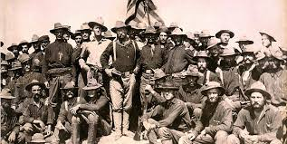
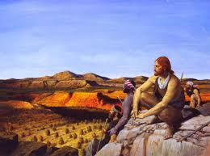
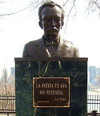

"Stop the Generational trend of Ignorance"
Home
African American
Native American
Asian American
Hispanic or Latino American
Native Hawaiian or pacific Islander
Arab American
Hispanic or Latin American History:
Origins:
Hispanic or Latino Americans dates back more than 400 years ago. They became the first American citizens after the Mexican-American War. Spaonards owned almost half of the land after the "Treaty of Paris." You can read more about their history
here.
More websites to look at:
The history behind the terms
Hispanic Timeline
Latino Immigration
Latino History Museum

Pivotal Moments in Hispanic or Latin American History:
Cabeza De Vaca.
Los Angeles Founded In 1781.
U.S. Extends Citizenship To Puerto Ricans In 1917
Mendez v. Westminster Decided.
The Cuban Revolution Comes To Power In 1959
1986 Immigration Reform.

Female Hispanic or Latin American Idols:
Rita Moreno
Alexandria Ocasio-Cortez .
Julia Alvarez.
Jennifer Lopez.
Sylvia Rivera.
Male Hispanic or Latin American Idols:
José Martí
Ruben Salazar
Cesar Chavez
Roberto Clemente
Marco Rubio
Lin-Manuel Miranda
